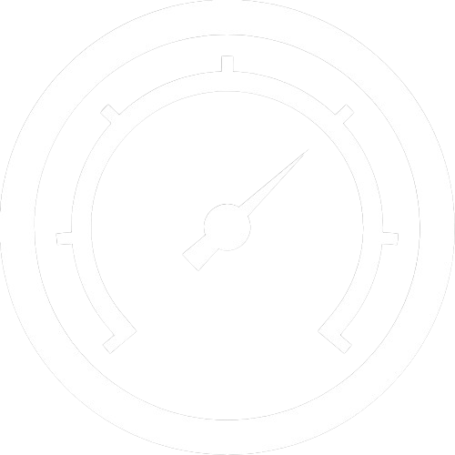

ANALYSE
Après l’analyse, tous les résultats sont
enregistrés dans cette base de données.
Les résultats de votre analyse sont affichés et interprétés. Sous forme de bilan, il s’agit d’un aperçu complet sur des signes potentiels détectés étant liés à la fatigue oculaire.

TABLEAU DES RÉSULTATS
A) DÉTECTION - VISION INFORMATIQUE
1. INTERVALLE CLIGNEMENTS
50%
IRRÉGULIERS (NB: 11)
2. FRÉQUENCE RÉGRESSIONS: 30%
3. FRÉQUENCE FIXATIONS: 45%
4. DURÉE FIXATIONS:
45% (m=27)
5. CONVERGENCE BINOCULAIRE
Déviation (moy): ≈ 9.18%
Réussies: 11 sur 8
6. FRÉQUENCE CLIGNEMENTS
2
irrégulier(s)
30
normaux
SCORE
2
sur 6

B) SYMPTÔMES RESSENTIS
CATÉGORIES ET SÉVÉRITÉS (ÉCHELLE)
1. OCULAIRE ----------------------------- 1/5
2. VISUELLE ----------------------------- 3/5
3. AUTRES ------------------------------ 4/5
SCORE (MOYENNE)
3.5
sur 5
INTERPRÉTATION
• Un indice objectif trouvé par vision informatique équivaut à 1 point.
Signe considéré si:
• Pourcentage intervalle > 25-30% (#1)
• Pourcentage régression est positif (#2)
• Pourcentage fixation est positif (#3)
• Pourcentage durée fixation est positif (#4)
• Nb de convergences < 8 (#5)
• Clignements irréguliers comptés (#6)
Sévérité lorsque:
• Score symptômes > 4 ou 5
• Score total > 4 ou 5
C) SCORE FINAL
6
(MOYENNE)
ÉCHELLE D'INTENSITÉ APPROXIMATIVE
1
2
3
4
5
6
Jamais / aucun probable
Parfois / tolérable
Souvent / intolérable
Fréquent / irritant
Constant / sévère